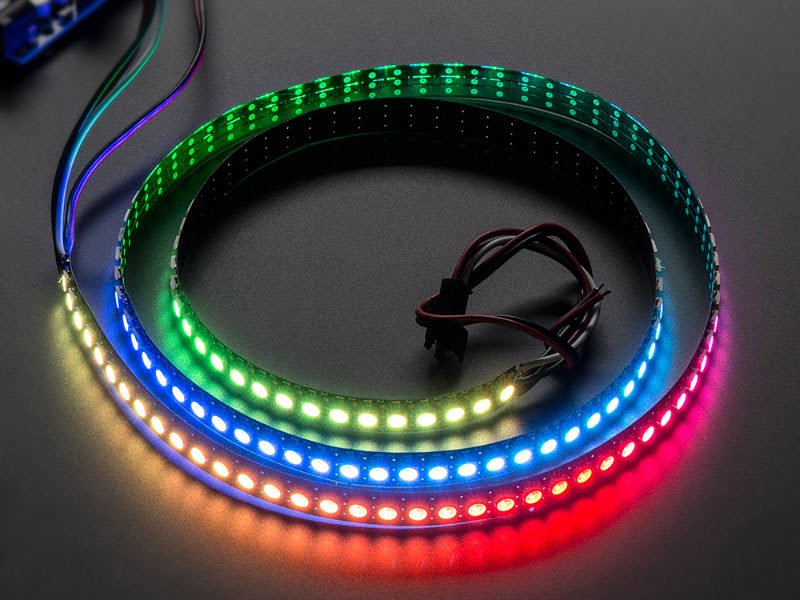
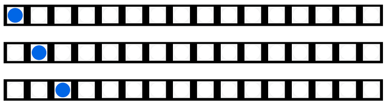
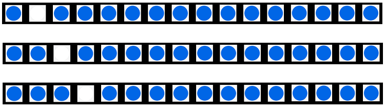

3. RGB LED¶
mPython掌控板载3颗WS2812灯珠，WS2812是一种集成了电流控制芯片的低功耗的RGB三色灯，可实现256级亮度显示，完成16777216种颜色的全真色彩显示。采用特殊的单线通讯方式控制RGB灯的颜色，使用简单。
3.1. 板载RGB LED¶
例：点亮RGB LED
from mpython import *
rgb[0] = (255, 0, 0) # 设置为红色，全亮度
rgb[1] = (0, 128, 0) # 设定为绿色，半亮度
rgb[2] = (0, 0, 64) # 设置为蓝色，四分之一亮度
rgb.write()
首先导入mpython模块:
from mpython import *
注解
导入mpython模块后，会为掌控创建一个NeoPixel对象rgb,控制板载的RGB只需对rgb对象操作。
设置颜色:
rgb[0] = (255, 0, 0) # 设置为红色，全亮度
rgb[1] = (0, 128, 0) # 设定为绿色，半亮度
rgb[2] = (0, 0, 64) # 设置为蓝色，四分之一亮度
注解
- rgb[n] = (r, g, b) 可以设置每个像素点颜色，
n为板载RGB灯的个数，第一个灯为0。r、g、b为颜色亮度值，范围值为0~255。 - rgb.fill(rgb_buf) 可以填充所有像素点的颜色，如：rgb.fill((255,0,0))，所有RGB灯设置为红色，全亮度。
将颜色输出到RGB灯:
rgb.write()
3.2. 外部彩带¶
{kind=link}
例：点亮外部彩带
from mpython import *
import neopixel
np = neopixel.NeoPixel(Pin(Pin.P15), n=24,bpp=3,timing=1)
def wheel(pos):
# 通过改变在0和255之间的每个颜色参数产生彩虹色光谱
# Input a value 0 to 255 to get a color value.
# The colours are a transition r - g - b - back to r.
if pos < 0 or pos > 255:
r = g = b = 0
elif pos < 85:
r = int(pos * 3)
g = int(255 - pos*3)
b = 0
elif pos < 170:
pos -= 85
r = int(255 - pos*3)
g = 0
b = int(pos*3)
else:
pos -= 170
r = 0
g = int(pos*3)
b = int(255 - pos*3)
return (r, g, b)
def cycle(np,r,g,b,wait=20):
# 循环效果,有一个像素在所有灯带位置上运行，而其他像素关闭。
for i in range(4 * np.n):
for j in range(np.n):
np[j] = (0, 0, 0)
np[i % np.n] = (r, g, b)
np.write()
sleep_ms(wait)
def bounce(np,r,g,b,wait=20):
# 弹跳效果,等待时间决定了弹跳效果的速度
n=np.n
for i in range(4 * n):
for j in range(n):
np[j] = (r, g, b)
if (i // n) % 2 == 0:
np[i % n] = (0, 0, 0)
else:
np[n - 1 - (i % n)] = (0, 0, 0)
np.write()
sleep_ms(wait)
def rainbow_cycle(np,wait_us):
# 彩虹效果
n=np.n
for j in range(255):
for i in range(n):
pixel_index = (i * 256 // n) + j
np[i] = wheel(pixel_index & 255)
np.write()
sleep_us(wait_us)
while True:
cycle(np,50,50,50,wait=20)
bounce(np,50,0,0,wait=20)
rainbow_cycle(np,20)

cycle循环效果

bounce弹跳效果
rainbow彩虹效果
如果需要使用外部彩带，要先创建一个neopixel对象,定义 pin 、bpp 、 timeing 参数，然后才能通过该对象控制彩带上的LED。
更详细的使用方法，请查阅 neopixel 模块 。
提示
mPyhton提供
neopixel 增强版 ledstrip 模块，已封装有更丰富的neopixel显示效果，操作简单。详细说明，请到以下链接。mPython-ledstrip：https://github.com/labplus-cn/awesome-mpython/tree/master/library